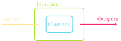

Jed Rembold
September 10, 2021
balance = balance + depositbalance += depositvariable op= expressionYou can name multiple variables at once by separating with commas
A, B, C = 1, 2, 3What is the final printed value of A in the code below?
>>> A = 10
>>> B = 4
>>> C = A * B
>>> A -= B
>>> A, B, C = C, A, B
>>> print(A)
??
The general form of a function definition looks like:
def name(parameter_list):
#statements in function bodyname is your chosen name for the functionparameter_list is a comma-separated list of variable names that will hold each input valueYou can return or output a value from the function by including a return statement
return expressionexpression is the value you want to return or outputreturn statement is included, Python will by default return NoneConvert Fahrenheit temperatures to their Celsius equivalent
def f_to_c(f):
return 5 / 9 * (f - 32)Using the function:
print(f_to_c(45))Computes the volume of a cylinder of height h and radius r
def cylinder_volume(r, h):
return 3.14159 * r**2 * hUsing the function:
print(cylinder_volume(2,10))| Function | Description |
|---|---|
abs(x) |
The absolute value of x |
max(x,y,...) |
The largest of all the arguments |
min(x,y,...) |
The smallest of all the arguments |
round(x) |
The value of x rounded to the nearest integer |
int(x) |
The value of x truncated to an integer |
float(x) |
The value of x as a decimal |
Most common is to use import to grab everything in a library
import mathvar = math.sqrt(4))Can also use from ... import to grab specific functions from the library
from math import sqrtvar = sqrt(4))math definitions| Code | Description |
|---|---|
math.pi |
The mathematical constant \(\pi\) |
math.e |
The mathematical constant \(e\) |
math.sqrt(x) |
The square root of x |
math.log(x) |
The natural logarithm of x |
math.log10(x) |
The base 10 logarithm of x |
math.sin(x) |
The sine of x in radians |
math.cos(x) |
The cosine of x in radians |
math.asin(x) |
The arcsin of x |
math.degrees(x) |
Converts from radians to degrees |
math.radians(x) |
Converts from degrees to radians |
Python programs specify what part of the code is supposed to be when a program is run using a few special lines at the end of the program
if __name__ == '__main__':
function_to_run()function_to_run is the name of whatever function you want to execute when the program is runPatterns of this sort are commonly called boilerplate
"This is a great string!"
'And this is also a string!'| Function | Description |
|---|---|
len(s) |
Gets the number of characters in s |
str(x) |
Converts the value of x to a string |
int(s) |
Attempts to convert s to an integer |
float(s) |
Attempts to convert s to a float |
print(...) |
Prints all arguments separated by spaces |
input(prompt) |
Shows the user prompt and then reads in a typed string |
Initially we will focus just on concatenating strings, or combining them end to end
Concatenate in Python using the + operator:
>>> print("ABC" + "DEF")
ABCDEF+ with numbers gets you addition, + with strings gets you concatenation
If you have mixed types and want concatenation, need to convert all to strings
>>> print("Catch" + str(-22))
Catch-22Python defines two types of operators that work with Boolean data: relational operators and logical operators
Relational operators compare values of other types and produce a True/False result:
== |
Equals | != |
Not equals | |||
< |
Less than | <= |
Less than or equal too | |||
> |
Greater than | >= |
Greater than or equal to |
Be careful! == compares two booleans. A single = assigns a variable. The odds are high you’ll use one when you meant the other at least once this semester!
Logical operators act on Boolean pairings
| Operator | Description |
|---|---|
A and B |
True if both terms True, False otherwise |
A or B |
True if any term is True, False otherwise |
not A |
True if A False, False if A True (opposite) |
or is still True if both options are True which is a little different than common English usenot with and and or
not A or BWhat is the final printed value in the code below?
TrueFalse"4Quiz"A = 10
B = 4
C = "Quiz"
A *= len(C)
if A > 40 and C != "C":
print(str(B)+C)
else:
print(A < B or not (C == "C"))
Example: if n=0, then the x % n == 0 is never actually checked in the statement
n != 0 and x % n == 0since n != 0 already is False and False and anything is always False
x % n == 0 statement would have erred out if n=0finished = False
while not finished:
line = input("Enter a number: ")
if line == "":
finished = True
else:
print(line)x = 7
y = 0
while x >= 0:
y += x
x -= 2
print(y)What will the printed output of the code to the left?
range() iterablerange() function handles this and produces the needed iterable objectBe careful, the range function will stop one step before the final stop value.
Providing just a stop argument:
for n in range(5):
print(n)Providing a start and stop:
for n in range(1,11):
print(n)Providing a start, stop, and step:
for n in range(10,0,-1):
print(n)We can also use a for loop to iterate directly over a sequence of values
Python supports many different types of sequences, but thus far we only know about one: strings!
We can loop through a string to examine each individual character
Example looping through to count occurrences of a given letter:
def count_letters(letter, string):
count = 0
for character in string:
if character == letter:
count += 1
return count